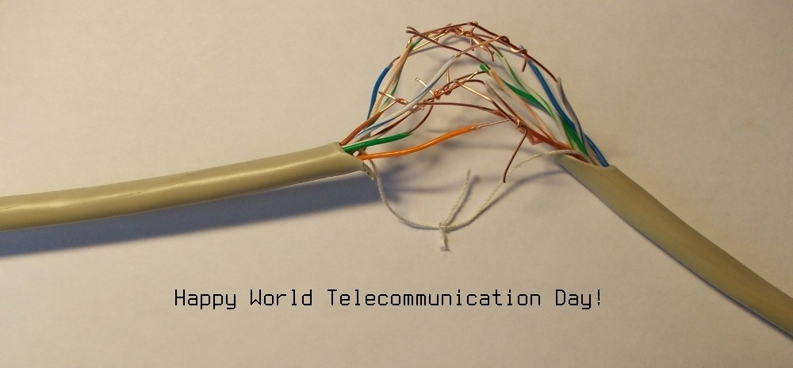

If you are bad at drawing, there are only two ways to make pictures: generate them or ask someone else. I mostly do the former, and occasionally the latter.
The polarizing holiday. Some oppose it for its commercialization, some for religious reasons, some just love it or hate it for no reason at all. Nerds have their own ways of mocking or celebrating it (you decide which of those I did).
I made up this parametric curve for the 2013 event. There are other curves around, but I didn't like their shape, and of course they weren't invented by me, so I chose to make my own. I should document its derivation some time, all it takes is just some basic facts from differential geometry really.
For now, here's the image:

and its gnuplot source: heart.gnuplot.
What's better than a curve? A surface, of course! Next year I made a three-dimensional version of that same curve. If you limit the range of x to a single half-period, you can get just one heart, but if you don't, you get a whole string of them. If you manage to 3d-print a heart necklace from it, let me know.

Here is the gnuplot source: heart_3d.gnuplot.
A b'ak'tun is a cycle of 144000 days (about 394 years) in the ancient Maya long count calendar. In the most commonly accepted correlation with the Gregorian calendar, the new 13th b'ak'tun started on 21 December 2012. Yes, that's what the infamous “2012 phenomenon” was really about (the original Maya calendar wraps around at that date, for some reason).
For this truly once in a lifetime event, my friend Irina Kushnerova and I made a picture of Itzamna, the creator god in the Maya mythology, pretending he's Santa.

Due to extreme length of a b'ak'tun, it's quite unlikely that I'll make another one.
The International Telecommucation Union seems to have a competing standard for every de facto standard in use. Their alternative to the de facto System Administrator Appreciation Day (the last Friday of July) is World Telecommunication and Information Society Day celebrated on May the 17th.
When I learnt about it, it prompted me to make this quick and dirty postcard from a broken cat5 cable I've had on my desk.
This is in fact a work from 2007, that I remembered of and recreated in 2012. It's been a while.
A three-dimensional equivalent of the well known polar rose. The cylindrical coordinate system is a natural fit, since the r and the φ remain the same and only the height function z needs to be set to something that has maxima at the same points as the maxima of the r and has minima where r has zeroes.
In cylindrical coordinates the equation looks very simple:

However, gnuplot did not have direct support for plotting 3d curves in cylindrical coordinates at the time, so I had to convert it to a cartesian “surface” These days it can be done with the nonlinear axis feature, but that's left as an exercise for the reader.
Here is the four-petal curve:

The gnuplot source: cylindrical_rose.gnuplot.
There's also an animated version:

To produce the GIF, you will need cylindrical_rose_animation.gnuplot and cylindrical_rose_animate.gnuplot. Place them in the same directory and run “gnuplot cylindrical_rose_animate.gnuplot”.
Border Gateway Protocol (BGP), the protocol used for the global Internet routing, operates at the level of so called “autonomous systems” rather than individual routers. Typically, one company uses only one autonomous system number. Thus in BGP you may see that the path to for example 192.0.2.0/24 network is “64600 64700 64800“. This says nothing about the number of routers on the way, but that the traffic will pass through three different Internet service providers.
One day I thought it would be fun to visualize a BGP table. Visualizing it from one router obviously does not produce a complete graph of all inter-AS connections, it only shows what it looks like from the AS where it belongs, but it does illustrate the total number of autonomous systems.
So I asked my friend who's an AS operator to dump the tables, converted them to Graphviz source files with a few lines of Perl, and ran them through the spdf program from Graphviz. Due to large numbers of routes, the process was quite resource-intensive, and I ran into difficulties producing PNG files of the IPv4 maps, since the default PNG library couldn't handle it, and I had to convert through SVG and some alternative tool.
Here are the maps from 2012. This one is for IPv4:

This is for IPv6:

I also repeated the experiment in 2015, but my machine didn't have enough resources to handle the IPv4 data set, and I only made the IPv6 version that time. Even looking from just one point, it's clear that in those three years the IPv6 Internet has grown much larger and more well-connected:

If you really want them, here are large versions. By large I mean large, (megabytes). The original unprocessed files were even larger. Here they are: ipv4_as_map.png, ipv6_as_map.png, ipv4_as_map_2015.png
A promotional picture for the OCaml programming language.
Different camel species are used as type variables
in the type of the reverse application operator (|>).

{kind=link}
{kind=link}
{kind=link}